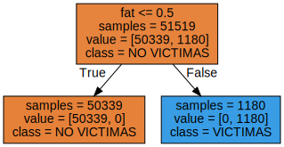
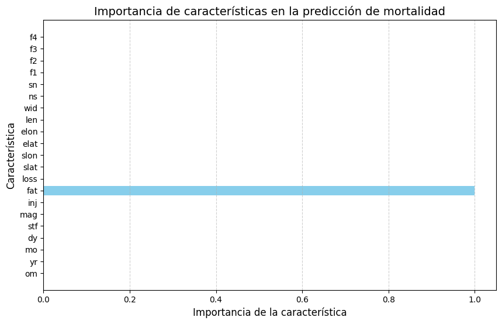
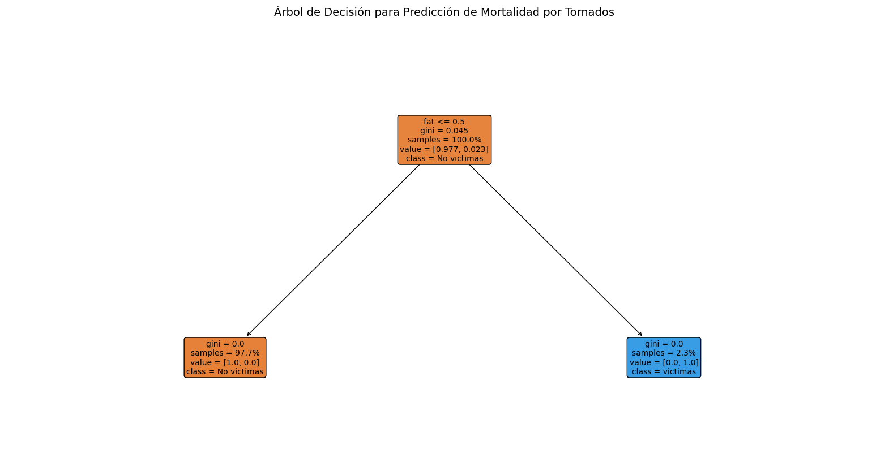
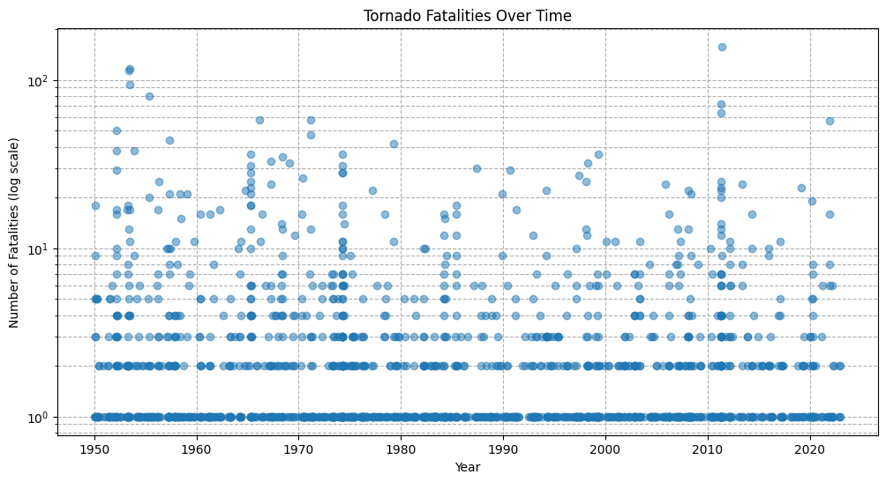
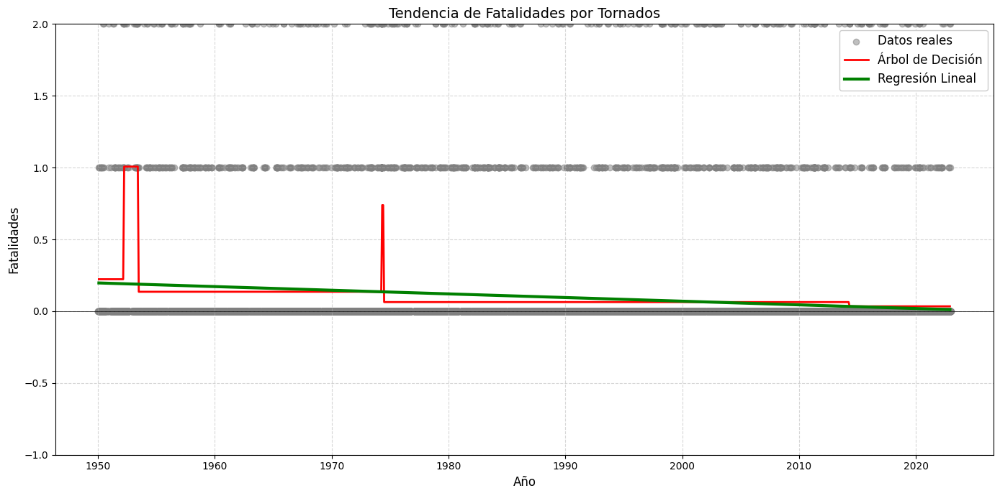
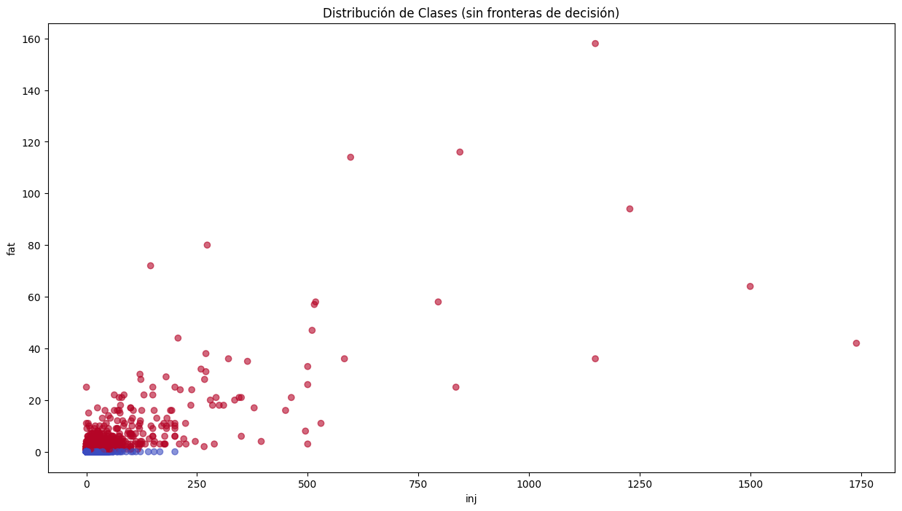
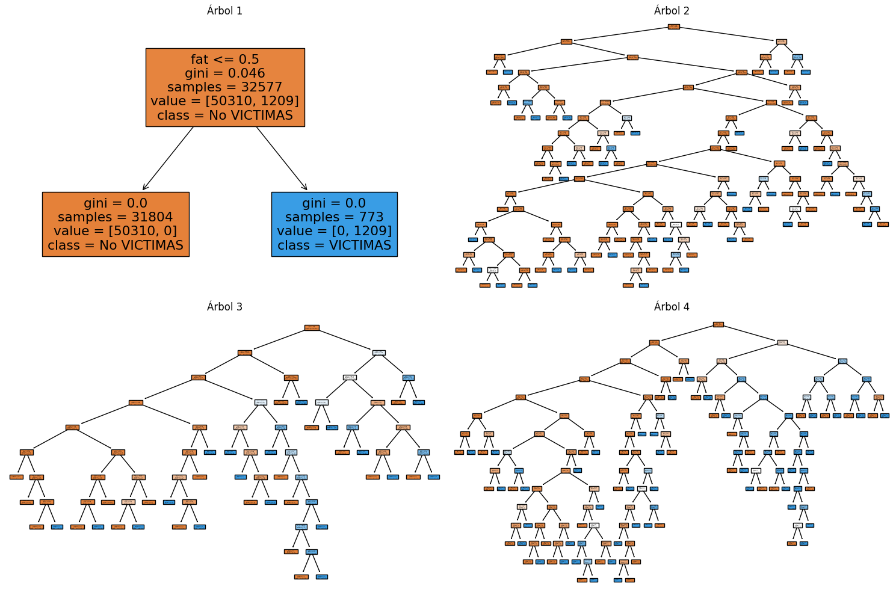
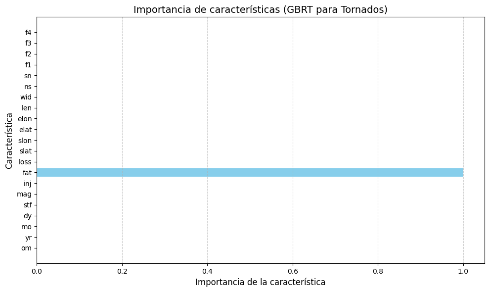

Cargue de Datos Árbol de Desición#
from sklearn.tree import DecisionTreeClassifier
from sklearn.datasets import load_breast_cancer
from sklearn.model_selection import train_test_split
import numpy as np
import pandas as pd
import matplotlib.pyplot as plt
import seaborn as sns
import warnings
warnings.filterwarnings('ignore')
import plotly.express as px
import plotly.graph_objects as go
from sklearn.model_selection import train_test_split
from sklearn.linear_model import LinearRegression
from sklearn.metrics import mean_squared_error, r2_score
import os
for dirname, _, filenames in os.walk('/kaggle/input'):
for filename in filenames:
print(os.path.join(dirname, filename))
ruta = r'C:/Users/wmanj/OneDrive/Escritorio/MACHINELEARNING/tornados.csv'
df = pd.read_csv(ruta)
df['loss'] = df['loss'].replace(0, pd.NA)
df['loss'] = df['loss'].interpolate(method='linear')
df['mag'] = df['mag'].fillna(df['mag'].mean())
df.isnull().sum()
---------------------------------------------------------------------------
FileNotFoundError Traceback (most recent call last)
Cell In[2], line 20
17 print(os.path.join(dirname, filename))
19 ruta = r'C:/Users/wmanj/OneDrive/Escritorio/MACHINELEARNING/tornados.csv'
---> 20 df = pd.read_csv(ruta)
21 df['loss'] = df['loss'].replace(0, pd.NA)
22 df['loss'] = df['loss'].interpolate(method='linear')
File ~\miniconda3\envs\ml_venv\lib\site-packages\pandas\io\parsers\readers.py:948, in read_csv(filepath_or_buffer, sep, delimiter, header, names, index_col, usecols, dtype, engine, converters, true_values, false_values, skipinitialspace, skiprows, skipfooter, nrows, na_values, keep_default_na, na_filter, verbose, skip_blank_lines, parse_dates, infer_datetime_format, keep_date_col, date_parser, date_format, dayfirst, cache_dates, iterator, chunksize, compression, thousands, decimal, lineterminator, quotechar, quoting, doublequote, escapechar, comment, encoding, encoding_errors, dialect, on_bad_lines, delim_whitespace, low_memory, memory_map, float_precision, storage_options, dtype_backend)
935 kwds_defaults = _refine_defaults_read(
936 dialect,
937 delimiter,
(...)
944 dtype_backend=dtype_backend,
945 )
946 kwds.update(kwds_defaults)
--> 948 return _read(filepath_or_buffer, kwds)
File ~\miniconda3\envs\ml_venv\lib\site-packages\pandas\io\parsers\readers.py:611, in _read(filepath_or_buffer, kwds)
608 _validate_names(kwds.get("names", None))
610 # Create the parser.
--> 611 parser = TextFileReader(filepath_or_buffer, **kwds)
613 if chunksize or iterator:
614 return parser
File ~\miniconda3\envs\ml_venv\lib\site-packages\pandas\io\parsers\readers.py:1448, in TextFileReader.__init__(self, f, engine, **kwds)
1445 self.options["has_index_names"] = kwds["has_index_names"]
1447 self.handles: IOHandles | None = None
-> 1448 self._engine = self._make_engine(f, self.engine)
File ~\miniconda3\envs\ml_venv\lib\site-packages\pandas\io\parsers\readers.py:1705, in TextFileReader._make_engine(self, f, engine)
1703 if "b" not in mode:
1704 mode += "b"
-> 1705 self.handles = get_handle(
1706 f,
1707 mode,
1708 encoding=self.options.get("encoding", None),
1709 compression=self.options.get("compression", None),
1710 memory_map=self.options.get("memory_map", False),
1711 is_text=is_text,
1712 errors=self.options.get("encoding_errors", "strict"),
1713 storage_options=self.options.get("storage_options", None),
1714 )
1715 assert self.handles is not None
1716 f = self.handles.handle
File ~\miniconda3\envs\ml_venv\lib\site-packages\pandas\io\common.py:863, in get_handle(path_or_buf, mode, encoding, compression, memory_map, is_text, errors, storage_options)
858 elif isinstance(handle, str):
859 # Check whether the filename is to be opened in binary mode.
860 # Binary mode does not support 'encoding' and 'newline'.
861 if ioargs.encoding and "b" not in ioargs.mode:
862 # Encoding
--> 863 handle = open(
864 handle,
865 ioargs.mode,
866 encoding=ioargs.encoding,
867 errors=errors,
868 newline="",
869 )
870 else:
871 # Binary mode
872 handle = open(handle, ioargs.mode)
FileNotFoundError: [Errno 2] No such file or directory: 'C:/Users/wmanj/OneDrive/Escritorio/MACHINELEARNING/tornados.csv'
pip install mglearn
# Crear la columna 'mortality' en el DataFrame original
df['mortality'] = df['fat'].apply(lambda x: 0 if x == 0 else 1)
# Renombrar el DataFrame a 'mortality_target'
mortality_target = df
import numpy as np
# Crear la columna 'mortality' con 0 si 'fat' es 0, y 1 si 'fat' es mayor que 0
df['mortality'] = np.where(df['fat'] == 0, 0, 1)
# Contar la cantidad de ceros y unos
print("Cantidad de ceros:", (df['mortality'] == 0).sum())
print("Cantidad de unos:", (df['mortality'] == 1).sum())
# Asignar el DataFrame modificado a 'tornados.target'
tornados_target = df
Cantidad de ceros: 67120
Cantidad de unos: 1573
from sklearn.model_selection import train_test_split
X = tornados_target[['om', 'yr', 'mo', 'dy', 'stf', 'mag', 'inj', 'fat', 'loss', 'slat', 'slon', 'elat', 'elon', 'len', 'wid', 'ns', 'sn', 'f1', 'f2', 'f3', 'f4']]
y = df['mortality']
# Dividir los datos en conjunto de entrenamiento y prueba
X_train, X_test, y_train, y_test = train_test_split(X, y, stratify=y, random_state=42)
from sklearn.tree import DecisionTreeClassifier
tree = DecisionTreeClassifier(random_state=0)
tree.fit(X_train, y_train)
print("Accuracy on training set: {:.3f}".format(tree.score(X_train, y_train)))
print("Accuracy on test set: {:.3f}".format(tree.score(X_test, y_test)))
Accuracy on training set: 1.000
Accuracy on test set: 1.000
Poda del árbol de decisión (Tree Pruning):
tree = DecisionTreeClassifier(random_state=0, max_depth=5, min_samples_split=10, min_samples_leaf=5)
tree.fit(X_train, y_train)
print("Accuracy on training set: {:.3f}".format(tree.score(X_train, y_train)))
print("Accuracy on test set: {:.3f}".format(tree.score(X_test, y_test)))
Accuracy on training set: 1.000
Accuracy on test set: 1.000
Validación cruzada (Cross-validation):
from sklearn.model_selection import cross_val_score
scores = cross_val_score(tree, X, y, cv=5)
print("Cross-validation scores: ", scores)
print("Average cross-validation score: {:.3f}".format(scores.mean()))
Cross-validation scores: [1. 1. 1. 1. 1.]
Average cross-validation score: 1.000
Ajuste de hiperparámetros:
from sklearn.model_selection import GridSearchCV
param_grid = {
'max_depth': [3, 5, 10, None],
'min_samples_split': [2, 10, 20],
'min_samples_leaf': [1, 5, 10]
}
grid_search = GridSearchCV(DecisionTreeClassifier(random_state=0), param_grid, cv=5)
grid_search.fit(X_train, y_train)
print("Best parameters: ", grid_search.best_params_)
print("Best cross-validation score: {:.3f}".format(grid_search.best_score_))
Best parameters: {'max_depth': 3, 'min_samples_leaf': 1, 'min_samples_split': 2}
Best cross-validation score: 1.000
Datos muy fáciles de predecir Si el conjunto de datos es muy sencillo o tiene patrones muy claros y consistentes, el modelo puede aprender perfectamente sin generalizar, lo que lleva a una puntuación perfecta. En este caso, el modelo no estaría aprendiendo nada nuevo o útil, ya que las decisiones ya están predeterminadas. (Data Leakage): La fuga de datos ocurre cuando el modelo tiene acceso a información en el conjunto de entrenamiento que normalmente no tendría en el mundo real. Esto puede hacer que el modelo se ajuste de manera excesiva a los datos de entrenamiento.
Análisis de los árboles de decisión#
from sklearn.tree import export_graphviz
from sklearn.tree import export_graphviz
# Exportar el árbol de decisión a un archivo .dot
export_graphviz(tree,
out_file="tree.dot", # Nombre del archivo de salida
class_names=["NO VICTIMAS", "VICTIMAS"], # Cambiar a los nombres de las clases de tu variable objetivo 'y'
feature_names=X.columns.tolist(), # Usar las columnas de X como nombres de características
impurity=False, # No mostrar la impureza de cada nodo
filled=True) # Colorear los nodos según la clase
pip install graphviz
import graphviz
with open("tree.dot") as f:
dot_graph = f.read()
graph = graphviz.Source(dot_graph)
pip install pygraphviz
import graphviz
graphviz.Source(dot_graph)

pip install lime
print("Feature importances:\n{}".format(tree.feature_importances_))
Feature importances:
[0. 0. 0. 0. 0. 0. 0. 1. 0. 0. 0. 0. 0. 0. 0. 0. 0. 0. 0. 0. 0.]
import matplotlib.pyplot as plt
import numpy as np
import matplotlib.pyplot as plt
import numpy as np
def plot_feature_importances_tornados(model, feature_names):
"""
Visualiza la importancia de las características para un modelo entrenado.
Parámetros:
-----------
model : modelo entrenado (ej: DecisionTreeClassifier, RandomForest)
feature_names : list
Nombres de las características usadas en el modelo.
"""
n_features = len(feature_names)
plt.figure(figsize=(10, 6))
plt.barh(range(n_features), model.feature_importances_, align='center', color='skyblue')
plt.yticks(np.arange(n_features), feature_names)
plt.xlabel("Importancia de la característica", fontsize=12)
plt.ylabel("Característica", fontsize=12)
plt.title("Importancia de características en la predicción de mortalidad", fontsize=14)
plt.grid(axis='x', linestyle='--', alpha=0.6)
plt.show()
# Uso de la función con tu modelo y datos:
feature_names = ['om', 'yr', 'mo', 'dy', 'stf', 'mag', 'inj', 'fat', 'loss',
'slat', 'slon', 'elat', 'elon', 'len', 'wid', 'ns', 'sn',
'f1', 'f2', 'f3', 'f4'] # Asegúrate de que coincida con X_train.columns
plot_feature_importances_tornados(tree, feature_names)

import matplotlib.pyplot as plt
from sklearn.tree import DecisionTreeClassifier, plot_tree
import numpy as np
# 1. Entrenar un árbol de decisión (como ya lo tienes)
tree = DecisionTreeClassifier(max_depth=6, random_state=42) # Limitar profundidad para visualización
tree.fit(X_train, y_train)
# 2. Visualizar el árbol
plt.figure(figsize=(20, 10))
plot_tree(tree,
feature_names=X_train.columns.tolist(), # Nombres de tus características
class_names=['No victimas', 'victimas'], # Nombres de tus clases
filled=True,
rounded=True,
proportion=True,
fontsize=10)
plt.title("Árbol de Decisión para Predicción de Mortalidad por Tornados", pad=20, fontsize=14)
plt.show()

pip install mglearn
import pandas as pd
ram_prices = pd.read_csv("https://raw.githubusercontent.com/lihkir/Data/main/ram_price.csv")
plt.semilogy(ram_prices.date, ram_prices.price);
plt.xlabel("Year");
plt.ylabel("Price in $/Mbyte");
import pandas as pd
import matplotlib.pyplot as plt
# 1. Cargar los datos
ruta = r'C:/Users/wmanj/OneDrive/Escritorio/MACHINELEARNING/tornados.csv'
df = pd.read_csv(ruta)
# 2. Verificar las columnas disponibles
print("Columnas disponibles:", df.columns.tolist())
# 3. Convertir la columna de fechas a datetime (si existe)
# Asumo que tienes una columna 'datetime_utc' o similar
if 'datetime_utc' in df.columns:
df['datetime_utc'] = pd.to_datetime(df['datetime_utc'])
df['year'] = df['datetime_utc'].dt.year # Extraer año si necesitas agrupar por año
# 4. Gráfico de fatalidades a lo largo del tiempo (versión corregida)
plt.figure(figsize=(12, 6))
# Opción 1: Si tienes columnas 'year' y 'fat' (fatalidades)
if 'year' in df.columns and 'fat' in df.columns:
# Agrupar fatalidades por año
fatalidades_por_año = df.groupby('year')['fat'].sum()
plt.semilogy(fatalidades_por_año.index, fatalidades_por_año.values, 'o-')
plt.xlabel("Año")
plt.ylabel("Número de fatalidades (escala logarítmica)")
plt.title("Fatalidades por tornados a lo largo del tiempo")
plt.grid(True, which="both", ls="--")
# Opción 2: Si tienes fechas exactas
elif 'datetime_utc' in df.columns and 'fat' in df.columns:
plt.semilogy(df['datetime_utc'], df['fat'], 'o', alpha=0.5)
plt.xlabel("Fecha")
plt.ylabel("Número de fatalidades (escala logarítmica)")
plt.title("Fatalidades por tornados a lo largo del tiempo")
plt.grid(True, which="both", ls="--")
else:
print("No se encontraron las columnas necesarias ('datetime_utc' o 'fat')")
plt.show()
Columnas disponibles: ['om', 'yr', 'mo', 'dy', 'date', 'time', 'tz', 'datetime_utc', 'st', 'stf', 'mag', 'inj', 'fat', 'loss', 'slat', 'slon', 'elat', 'elon', 'len', 'wid', 'ns', 'sn', 'f1', 'f2', 'f3', 'f4', 'fc']
from sklearn.tree import DecisionTreeRegressor
from sklearn.linear_model import LinearRegression
import pandas as pd
# Asumiendo que tu DataFrame se llama df y tiene una columna de fecha llamada 'date'
# Si tu columna tiene otro nombre (ej: 'datetime_utc'), cámbialo en el código
# 1. Convertir la columna de fecha a tipo datetime (si no lo está)
df['date'] = pd.to_datetime(df['date']) # Cambia 'date' por tu columna real
# 2. Definir el año de corte (ej: entrenar con datos antes del 2010 y test después)
corte_year = 2010
# 3. Dividir los datos
train = df[df['date'].dt.year < corte_year]
test = df[df['date'].dt.year >= corte_year]
# 4. Verificación
print(f"Entrenamiento: {train.shape[0]} registros ({train['date'].min().year}-{train['date'].max().year})")
print(f"Prueba: {test.shape[0]} registros ({test['date'].min().year}-{test['date'].max().year})")
Entrenamiento: 53228 registros (1950-2009)
Prueba: 15465 registros (2010-2022)
# Dividir considerando fatalidades ('fat')
corte_year = 2010
train = df[df['date'].dt.year < corte_year]
test = df[df['date'].dt.year >= corte_year]
# Análisis comparativo
print("\nFatalidades promedio:")
print(f"Entrenamiento: {train['fat'].mean():.2f} por tornado")
print(f"Prueba: {test['fat'].mean():.2f} por tornado")
Fatalidades promedio:
Entrenamiento: 0.09 por tornado
Prueba: 0.07 por tornado
import pandas as pd
import numpy as np
import matplotlib.pyplot as plt
# 1. Load your tornado data
tornado_data = pd.read_csv('tornados.csv')
# 2. Convert date column to datetime
tornado_data['date'] = pd.to_datetime(tornado_data['date'])
# 3. Verify and clean numerical columns (like fatalities)
# Convert string numbers to numeric, coercing errors to NaN
tornado_data['fat'] = pd.to_numeric(tornado_data['fat'], errors='coerce')
# 4. Handle zeros/negative values before log transform
# Add small constant to avoid log(0)
tornado_data['log_fat'] = np.log(tornado_data['fat'] + 1e-6) # 1e-6 avoids log(0)
# 5. Now create the semi-log plot correctly
plt.figure(figsize=(12, 6))
plt.semilogy(tornado_data['date'], tornado_data['fat'], 'o', alpha=0.5)
plt.xlabel("Year")
plt.ylabel("Number of Fatalities (log scale)")
plt.title("Tornado Fatalities Over Time")
plt.grid(True, which="both", ls="--")
plt.show()

import pandas as pd
import numpy as np
from sklearn.tree import DecisionTreeRegressor
from sklearn.linear_model import LinearRegression
import matplotlib.pyplot as plt
# Cargar y preparar datos
df = pd.read_csv('tornados.csv')
df['date'] = pd.to_datetime(df['date'])
df['days_since_start'] = (df['date'] - df['date'].min()).dt.days
# Variables para el modelo
X = df[['days_since_start']]
y = df['fat'].fillna(0) # Asumiendo que 'fat' son fatalidades
# Entrenar modelos
tree = DecisionTreeRegressor(max_depth=3, random_state=42).fit(X, y)
linear = LinearRegression().fit(X, y)
# Crear rango de predicción
date_range = pd.date_range(start=df['date'].min(), end=df['date'].max(), freq='M')
X_pred = pd.DataFrame({'days_since_start': [(d - df['date'].min()).days for d in date_range]})
# Predicciones
df_pred = pd.DataFrame({
'date': date_range,
'tree_pred': tree.predict(X_pred),
'linear_pred': linear.predict(X_pred)
})
# Configuración del gráfico con tus requisitos
plt.figure(figsize=(14, 7))
# 1. Datos reales
plt.scatter(df['date'], y, alpha=0.5, label='Datos reales', color='gray')
# 2. Línea de Árbol de Decisión (roja)
plt.plot(df_pred['date'], df_pred['tree_pred'], 'r-', lw=2, label='Árbol de Decisión')
# 3. Línea de Regresión Lineal (verde)
plt.plot(df_pred['date'], df_pred['linear_pred'], 'g-', lw=3, label='Regresión Lineal') # Verde sólido
# Configuración de ejes
plt.ylim(-1, 2) # Rango del eje Y fijo de -5 a 10
plt.xlabel('Año', fontsize=12)
plt.ylabel('Fatalidades', fontsize=12)
plt.title('Tendencia de Fatalidades por Tornados', fontsize=14)
# Elementos adicionales
plt.legend(fontsize=12, framealpha=1)
plt.grid(True, linestyle='--', alpha=0.5)
plt.axhline(y=0, color='black', linestyle='-', linewidth=0.5) # Línea en y=0
# Ajustar márgenes
plt.tight_layout()
plt.show()

RANDOM FOREST#
from sklearn.ensemble import RandomForestClassifier
from sklearn.datasets import make_moons
from sklearn.model_selection import train_test_split
import matplotlib.pyplot as plt
ruta = r'C:/Users/wmanj/OneDrive/Escritorio/MACHINELEARNING/tornados.csv'
df = pd.read_csv(ruta)
df['loss'] = df['loss'].replace(0, pd.NA)
df['loss'] = df['loss'].interpolate(method='linear')
df['mag'] = df['mag'].fillna(df['mag'].mean())
df.isnull().sum()
om 0
yr 0
mo 0
dy 0
date 0
time 0
tz 0
datetime_utc 0
st 0
stf 0
mag 0
inj 0
fat 0
loss 0
slat 0
slon 0
elat 0
elon 0
len 0
wid 0
ns 0
sn 0
f1 0
f2 0
f3 0
f4 0
fc 0
dtype: int64
# Crear la columna 'mortality' en el DataFrame original
df['mortality'] = df['fat'].apply(lambda x: 0 if x == 0 else 1)
# Renombrar el DataFrame a 'mortality_target'
mortality_target = df
import numpy as np
# Crear la columna 'mortality' con 0 si 'fat' es 0, y 1 si 'fat' es mayor que 0
df['mortality'] = np.where(df['fat'] == 0, 0, 1)
# Contar la cantidad de ceros y unos
print("Cantidad de ceros:", (df['mortality'] == 0).sum())
print("Cantidad de unos:", (df['mortality'] == 1).sum())
# Asignar el DataFrame modificado a 'tornados.target'
tornados_target = df
Cantidad de ceros: 67120
Cantidad de unos: 1573
from sklearn.model_selection import train_test_split
X = tornados_target[['om', 'yr', 'mo', 'dy', 'stf', 'mag', 'inj', 'fat', 'loss', 'slat', 'slon', 'elat', 'elon', 'len', 'wid', 'ns', 'sn', 'f1', 'f2', 'f3', 'f4']]
y = df['mortality']
# Dividir los datos en conjunto de entrenamiento y prueba
X_train, X_test, y_train, y_test = train_test_split(X, y, stratify=y, random_state=42)
forest = RandomForestClassifier(n_estimators=5, random_state=2)
forest.fit(X_train, y_train)
RandomForestClassifier(n_estimators=5, random_state=2)In a Jupyter environment, please rerun this cell to show the HTML representation or trust the notebook.
On GitHub, the HTML representation is unable to render, please try loading this page with nbviewer.org.
RandomForestClassifier(n_estimators=5, random_state=2)
pip install mglearn
import numpy as np
import matplotlib.pyplot as plt
from sklearn.ensemble import RandomForestClassifier
def visualize_forest(forest, X_train, y_train, feature_names=None):
"""Visualización garantizada de Random Forest para datos de tornados"""
# 1. Verificación básica de inputs
if not hasattr(forest, 'estimators_'):
raise ValueError("El modelo proporcionado no es un Random Forest con árboles accesibles")
# 2. Preparación de datos
X = X_train.values if hasattr(X_train, 'values') else np.array(X_train)
y = y_train.values if hasattr(y_train, 'values') else np.array(y_train)
# 3. Selección automática de 2 características importantes
if feature_names is None:
feature_names = [f"Feature {i}" for i in range(X.shape[1])]
if X.shape[1] < 2:
raise ValueError("Se necesitan al menos 2 características para la visualización")
# Seleccionar las 2 características más importantes
if hasattr(forest, 'feature_importances_'):
top_features = np.argsort(forest.feature_importances_)[-2:]
else:
top_features = [0, 1] # Por defecto
X_2d = X[:, top_features]
selected_features = [feature_names[i] for i in top_features]
# 4. Configuración de la figura
plt.figure(figsize=(15, 8))
# 5. Visualización del Random Forest completo
try:
from mlxtend.plotting import plot_decision_regions
plot_decision_regions(X_2d, y, clf=forest, legend=2)
plt.xlabel(selected_features[0])
plt.ylabel(selected_features[1])
plt.title("Fronteras de Decisión del Random Forest")
except ImportError:
# Fallback si no tienes mlxtend instalado
plt.scatter(X_2d[:, 0], X_2d[:, 1], c=y, cmap='coolwarm', alpha=0.6)
plt.xlabel(selected_features[0])
plt.ylabel(selected_features[1])
plt.title("Distribución de Clases (sin fronteras de decisión)")
plt.show()
# 6. Visualización de los primeros 4 árboles
n_trees = min(4, len(forest.estimators_))
fig, axes = plt.subplots(2, 2, figsize=(15, 10))
for i, ax in enumerate(axes.ravel()[:n_trees]):
from sklearn.tree import plot_tree
plot_tree(forest.estimators_[i],
feature_names=feature_names,
class_names=['No VICTIMAS', 'VICTIMAS'],
filled=True,
ax=ax)
ax.set_title(f"Árbol {i+1}")
plt.tight_layout()
plt.show()
# Ejemplo de uso:
# visualize_forest(forest_model, X_train, y_train, feature_names=['mag', 'fat', 'len', 'wid'])
print("Dimensiones de X_train:", X_train.shape)
print("Clases en y_train:", np.unique(y_train))
Dimensiones de X_train: (51519, 21)
Clases en y_train: [0 1]
pip install mlxtend scikit-learn matplotlib numpy
# Asumiendo que tienes:
# forest = RandomForestClassifier().fit(X_train, y_train)
visualize_forest(forest, X_train, y_train, feature_names=['om', 'yr', 'mo', 'dy', 'stf', 'mag', 'inj', 'fat', 'loss',
'slat', 'slon', 'elat', 'elon', 'len', 'wid', 'ns', 'sn',
'f1', 'f2', 'f3', 'f4'])


from sklearn.ensemble import GradientBoostingClassifier
from sklearn.model_selection import train_test_split
from sklearn.datasets import load_breast_cancer
import matplotlib.pyplot as plt
import numpy as np
X_train, X_test, y_train, y_test = train_test_split(X, y, stratify=y, random_state=42)
gbrt = GradientBoostingClassifier(random_state=0)
gbrt.fit(X_train, y_train)
print("Accuracy on training set: {:.3f}".format(gbrt.score(X_train, y_train)))
print("Accuracy on test set: {:.3f}".format(gbrt.score(X_test, y_test)))
Accuracy on training set: 1.000
Accuracy on test set: 1.000
gbrt = GradientBoostingClassifier(random_state=0, max_depth=1)
gbrt.fit(X_train, y_train)
print("Accuracy on training set: {:.3f}".format(gbrt.score(X_train, y_train)))
print("Accuracy on test set: {:.3f}".format(gbrt.score(X_test, y_test)))
Accuracy on training set: 1.000
Accuracy on test set: 1.000
gbrt = GradientBoostingClassifier(random_state=0, learning_rate=0.01)
gbrt.fit(X_train, y_train)
print("Accuracy on training set: {:.3f}".format(gbrt.score(X_train, y_train)))
print("Accuracy on test set: {:.3f}".format(gbrt.score(X_test, y_test)))
Accuracy on training set: 1.000
Accuracy on test set: 1.000
import numpy as np
import matplotlib.pyplot as plt
from sklearn.ensemble import GradientBoostingClassifier
# 1. Definir la función de visualización con todos los parámetros necesarios
def plot_feature_importances_tornados(model, feature_names, title="Importancia de características"):
"""
Visualiza la importancia de las características para un modelo entrenado
Parámetros:
model: Modelo entrenado (debe tener feature_importances_)
feature_names: Lista de nombres de características
title: Título del gráfico (opcional)
"""
n_features = len(feature_names)
importances = model.feature_importances_
plt.figure(figsize=(10, 6))
plt.barh(range(n_features), importances, align='center', color='skyblue')
plt.yticks(np.arange(n_features), feature_names)
plt.xlabel("Importancia de la característica", fontsize=12)
plt.ylabel("Característica", fontsize=12)
plt.title(title, fontsize=14)
plt.grid(True, axis='x', linestyle='--', alpha=0.6)
plt.tight_layout()
plt.show()
# 2. Entrenar el modelo GBRT
gbrt = GradientBoostingClassifier(random_state=0, max_depth=1)
gbrt.fit(X_train, y_train)
# 3. Obtener los nombres de las características
# Asumiendo que X_train es un DataFrame de pandas:
feature_names = X_train.columns.tolist()
# 4. Visualizar la importancia de características
plot_feature_importances_tornados(gbrt, feature_names,
title="Importancia de características (GBRT para Tornados)")

import lime
import lime.lime_tabular
import numpy as np
# Versión corregida del explainer LIME
explainer = lime.lime_tabular.LimeTabularExplainer(
training_data=np.array(X_train), # Asegurar que es numpy array
feature_names=X_train.columns.tolist(), # Nombres de características
class_names=['No victimas ', 'victimas'], # Nombres de clases (ajustar según tus datos)
mode='classification',
discretize_continuous=True, # Mejor para variables numéricas
random_state=42 # Para reproducibilidad
)
from sklearn.datasets import load_iris
from sklearn.model_selection import train_test_split
from sklearn.ensemble import RandomForestClassifier
# Cargar datos de ejemplo (iris)
X = tornados_target[['om', 'yr', 'mo', 'dy', 'stf', 'mag', 'inj', 'fat', 'loss', 'slat', 'slon', 'elat', 'elon', 'len', 'wid', 'ns', 'sn', 'f1', 'f2', 'f3', 'f4']]
y = df['mortality']
# Dividir los datos en conjunto de entrenamiento y prueba
X_train, X_test, y_train, y_test = train_test_split(X, y, stratify=y, random_state=42)
# 1. Crear y entrenar el modelo
modelo = RandomForestClassifier()
modelo.fit(X_train, y_train)
# 2. Predecir la instancia 100 (si existe)
try:
# Intenta acceso como DataFrame
instance = X_test.iloc[100:101].values
except AttributeError:
try:
# Si falla, intenta como array NumPy
instance = X_test[100].reshape(1, -1)
except IndexError:
print(f"Error: X_test solo tiene {len(X_test)} muestras")
exit()
prediccion = modelo.predict(instance)
print("Predicción:", prediccion)
Predicción: [0]
# 1. Selección segura de la instancia
try:
instance = X_test.iloc[100:101] if hasattr(X_test, 'iloc') else X_test[100].reshape(1, -1)
except IndexError:
print(f"¡Error! X_test solo tiene {len(X_test)} muestras.")
exit()
# 2. Predicción y probabilidades (si el modelo lo soporta)
prediccion = modelo.predict(instance)
probabilidades = modelo.predict_proba(instance) if hasattr(modelo, 'predict_proba') else None
# 3. Resultado detallado
print("\n--- Resultado de Predicción ---")
print(f"Clase predicha: {prediccion[0]}")
if probabilidades is not None:
print(f"Probabilidades por clase: {probabilidades[0].round(3)}")
# 4. Visualización (para datos tabulares)
if hasattr(instance, 'columns'):
display(instance.style.highlight_max(axis=1))
--- Resultado de Predicción ---
Clase predicha: 0
Probabilidades por clase: [1. 0.]
| om | yr | mo | dy | stf | mag | inj | fat | loss | slat | slon | elat | elon | len | wid | ns | sn | f1 | f2 | f3 | f4 | |
|---|---|---|---|---|---|---|---|---|---|---|---|---|---|---|---|---|---|---|---|---|---|
| 9706 | 200 | 1967 | 4 | 21 | 17 | 1.000000 | 0 | 0 | 5000.000000 | 40.100000 | -88.300000 | 0.000000 | 0.000000 | 0.100000 | 10 | 1 | 1 | 19 | 0 | 0 | 0 |